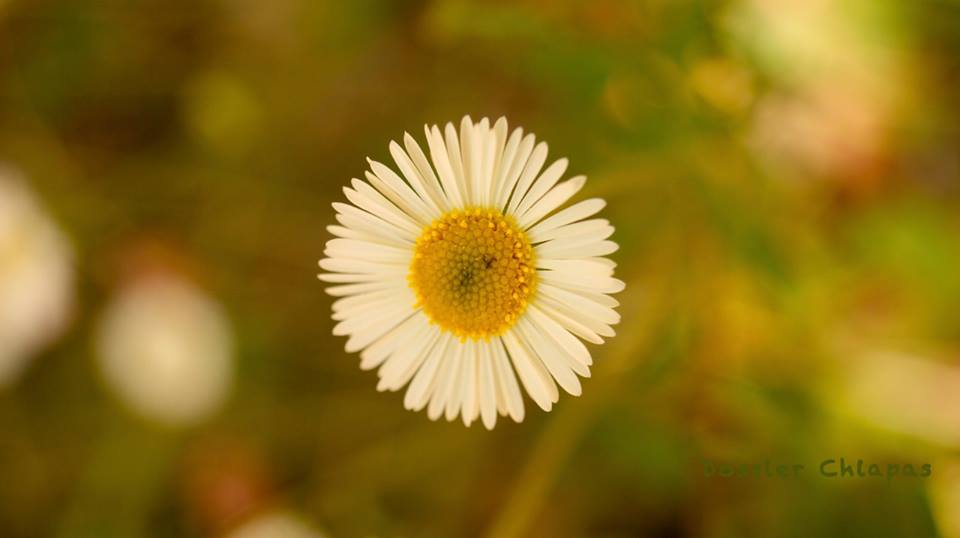
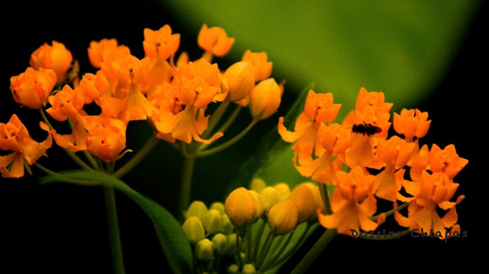
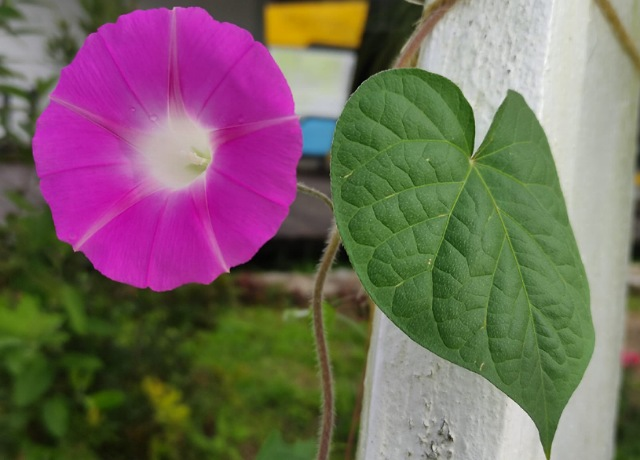
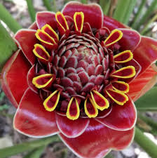
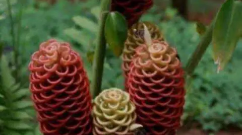

Ir abajo
FLOR DE CHIAPAS

Pulse sobre la imagen para obtener más información
Chiapas es un estado conocido por su impresionante biodiversidad y, entre su flora, destaca la flor conocida como **Mussenda**, también llamada "Flor de Pascua de Chiapas". Esta planta tropical es famosa por sus vibrantes colores, que van desde el blanco hasta el amarillo y el rosa intenso. Además de su belleza, esta flor simboliza la riqueza cultural y natural de la región.
La flor de Chiapas no solo es un espectáculo visual, sino que también posee múltiples usos tradicionales. Por ejemplo, las comunidades indígenas han utilizado partes de esta planta en remedios naturales, así como en ceremonias espirituales, donde la flor representa pureza y renovación.
En los mercados locales de Chiapas, es común encontrar arreglos florales que incluyen la **Mussenda** junto con otras especies endémicas. Estos arreglos no solo embellecen hogares, sino que también representan una conexión con las tradiciones ancestrales de la región. Además, esta flor se cultiva en proyectos de conservación para preservar su existencia y promover la diversidad biológica de Chiapas.
| FLOR DE CHIAPAS |
|  |
 |
|  |
 |
Conservar la flora de Chiapas no solo significa proteger la biodiversidad, sino también preservar las raíces culturales que conectan a los habitantes de esta región con la naturaleza. Así que, si tienes la oportunidad de visitar Chiapas, no olvides apreciar la belleza de su flora y contribuir a su cuidado.
Ir arriba